In einem normierten Raum kann man Reihen von Elementen betrachten. Das bedeutet: Für eine gegebene Folge  von Elementen 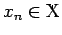 bildet man die neue Folge 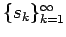 mit Hilfe der Partialsummen
von Elementen 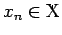 bildet man die neue Folge 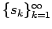 mit Hilfe der Partialsummen
| 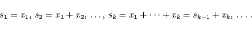 | (12.87) |
Wenn die Folge konvergiert, d.h. 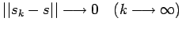 für ein gewisses 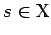, dann ist eine konvergente Reihe definiert. Der Grenzwert
heißt dann Summe der Reihe, wofür man auch 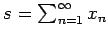 schreibt. Eine Reihe 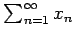 heißt absolut konvergent, wenn die Zahlenreihe 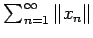 konvergiert. Im BANACH-Raum ist jede absolut konvergente Reihe konvergent, wobei für ihre Summe 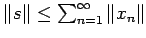 gilt.